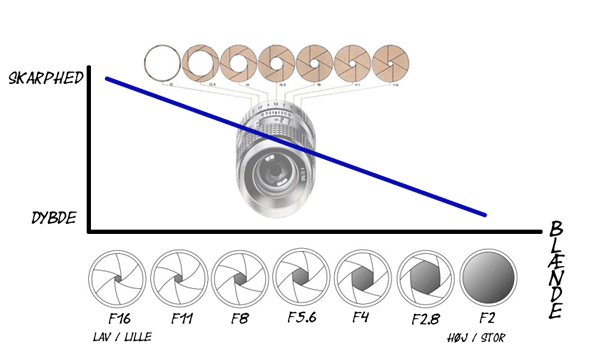
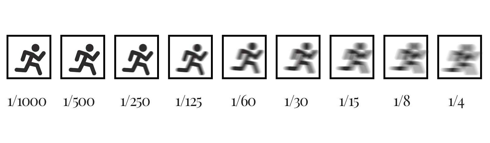
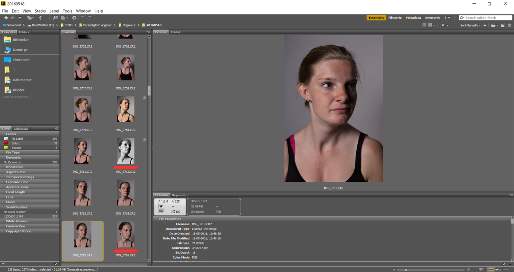
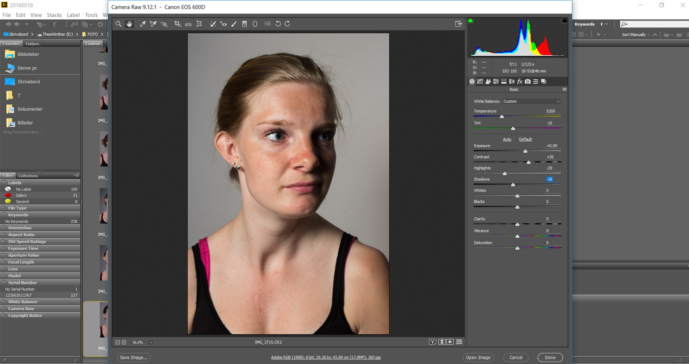
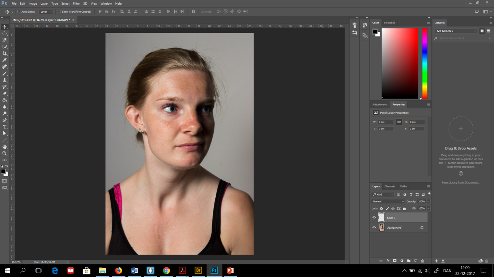

Foto
Blænde - dybdeskarphed
Blænde kontrollere hvor meget eller hvor lidt lys der lukkes ind i kamera, det vil sige
Lavt blændetal - stor blændeåbning = lille dybdeskarphed.
Stort blændetal - lille blændeåbning = stor dybdeskarphed.
Teorien illustreres på billederne nedenunder.


Dvs. at ved et højt blændetal lukkes der lidt lys ind,
hvorimod ved lille blændetal lukkes der meget lys ind.
Blændeåbningen består af lameller, jo flere lameller der er jo bedre,
da blændeåbningen får en mere jævn runding.
Blænden kan bruges til at rydde op i motivet og til at sikre sig at publikum fokuserer på de vigtige ting i billedet.

Lukketid
En hurtig lukketid vil fryse et billede.
En lang lukketid vil udtvære alle alle bevægelser i billedet, man får en fornemmelse af bevægelse.
Lang lukketid bruges ofte ved nattebilleder og kan bruges som et kreativt virkemiddel.
Ved brug af lang lukketid, vil det tit være en fordel at gøre brug af stativ, da billedet ellers kan blive
meget rystede og sløret.

ISO
ISO tilfører lys til billedet.
Er lysfølsomhed, via iso'en kan man tilføje billedet mere lys.
Iso hæver således informationerne i billedet.
Vi prøver altid at bruge så lille en iso som muligt, da en høj iso støj og vil dermed gøre billedet grynet.

Som hovedregel:
Ved en solskinsdag iso 100
Ved en overskyet dag iso 200
Man kan være i situationer hvor det kræver at man bruger en høj iso, og så må man gøre op med sig selv
om man vil have nogle billeder hvor der er støj på eller ingen billeder.
Eksponering - hvidbalance
Ved hjælp af blænden, lukketiden og iso’en kan man skabe den korrekte eksponering. Via. et histogram kan man se om billedet er under,
over eller korrekt eksponeret.
Med histogrammet kan man se de områder der forsvinder i det sorte og de steder der vil brænde ud i billedet.
Naturliglys/udenfor – 5600 kelvin grader, koldt og blåt lys.
Kunstiglys/indenfor – 3200 kelvin grader, varmt og orange lys.
Work flow



Billedkomposition
Fang publikum: Fange, fængsle og fornøje – et godt billede formår at fange publikum og få dem til at blive stående og studere billedet nærmere,
billedet skal fange og fængsle dem til at blive stående og kigge i mere end et par sek, så ved man at man har lavet noget der pirre deres opmærksomhed.
Man kan bruge forskellige billedekompositioner til at fange og drage publikums blikke i den retning man ønsker. Man kan lege med forgrund, mellemgrund
og baggrund for at give billedet nogle forskellige dimissioner og for at skabe noget dybde i et billede, det gør at billedet virker mere levende.
Et landskabsbillede/ situationsbillede giver en helt anden stemning end et helt nært portrætbillede, på den måde kan selve beskæringen være med til at fortælle den konkrete historie man ønsker at få frem.
Det gyldne snit Skaber harmoni i billedet. I det gyldne snit flytter man som regel horisontlinjen op eller ned så den ikke ligger i midten af billedet men så den ligger i det gyldne snit.